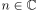
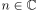
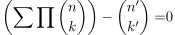
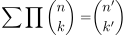

Beweisstruktur: Kombinatorik - Binomialkoeffizient als Polynom
1. Satz
Sei eine Identität der Art  für alle
für alle  gegeben
Dann folgt, dass die Identität auch für  gilt
gegeben
Dann folgt, dass die Identität auch für  gilt
2. Beweis
Man betrachte den Binomialkoeffizienten als Polynom, so dass man für

1
eine Polynom erhält. Nach dem Fundamentalsatz der Algebra für unendlich viele Nullstellen folgt, dass es hier das Nullpolynom ist. Daraus folgt:

2